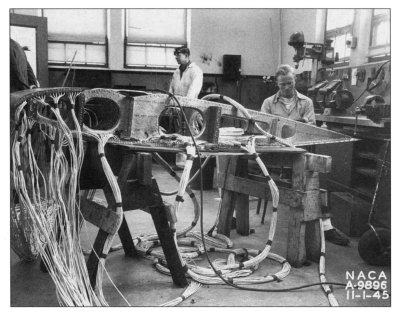

"... Before attacking what appeared to be a new icing problem we should study the icing work of the 1940's and 50's." 1
One year of "Blast from the Past: NACA Icing Publications"

Image from "NACA Conference on Aircraft Ice Prevention A Compilation of Papers Presented by NACA Staff Members" 6505/NACA-1947/8, 1947. (colorized) (and the new logo for 2023)
I made 50+ posts in the past 12 months.
I am thankful for the continuing level of interest shown in the topic.
Progress on the 132 NACA Icing Publications
I set out to review the 132 publications in the "Selected Bibilography of NACA-NASA Aircraft Icing Publications".
Out of 132 publications,
I wrote 33 reviews.
(links to the individual reviews are included in the "Selected Bibilography of NACA-NASA Aircraft Icing Publications")
There is still a long way to go!
Some areas have had more coverage than others:
- Meteorology of Icing Clouds
2 out of 14 - Fundamental Properties of Water
2 out of 7 (NACA-TN-3024 reviewed twice) - Meteorological Instruments
10 out of 15 (NACA-RM-A9C09 reviewed twice) - Impingement of Cloud Droplets
5 out of 25 (NACA-TR-1215 reviewed twice) - Propeller Ice Protection
0 out of 11 - Induction System Ice Protection
0 out of 3 - Wing Ice Protection
3 out of 13 - Performance Penalties
6 out of 8 - Windshield Ice Protection
0 out of 2 - Cooling Fan Ice Protection
0 out of 1 - Radome Ice Protection
0 out of 2 - Antenna icing
0 out of 2 - Inlet and Vent Icing Protection
0 out of 1 - Jet Penetration
0 out of 5 - Heat Transfer
4 out of 7 - Miscellaneous
2 out of 8
Other icing publications reviews
Some of my former managers might have told me I was "off message" for not getting more of the 132 publications covered, but I have also reviewed some important, contemporary publications.
The review of "Mathematical Investigation of Water Droplet Trajectories" covered one of the most cited icing publications of all time, and spawned five more reviews to cover Langmuir's work in more detail.
- A Detailed Comparison of Water Drop Impingement Calculations
- A Langmuir B drop size distribution is (almost) a normal distribution
- Super-Cooled Water Droplets in Rising Currents of Cold Saturated Air
- Implementation of cylinder impingement correlations in Python
- Implementation of multicylinder calculations in Python
The review of B. L. Messinger, "Equilibrium Temperature of an Unheated Icing Surface as a Function of Airspeed" covered one of the most cited icing publications of all time (and was the most viewed of my posts, with 4000+ views).
Four topic threads had Conclusions posts that summarized the thread, and traced uses to the current era.
The Icing Wind Tunnel Test Thread covered something that the 132 publications did not directly include, the NACA-era Lewis Icing Research Tunnel (IRT) and other tunnels, and their uses. This included 11 reviews, several from the post-NACA era:
- AEDC-TR-85-30, "Analysis and Verification of the Icing Scaling Equations"
- AEDC-TR-87-23, "An Empirical Look at Tolerances in Setting Icing Test Conditions with Particular Application to Icing Similitude"
- Bilanin Pi-Terms and the Weber Number
- NASA/CR-2004-212875 "Manual of Scaling Methods"
- The Effects of Humidity
- Anti-Ice Test Similarity, AIAA-2017-3927, "Evaluation of Alternative Altitude Scaling Methods for Thermal Ice Protection System in NASA Icing Research Tunnel"
- Large Drop Icing Conditions in Icing Wind Tunnels
The Water drop evaporation thread had four reviews, but three were not of NACA icing publications.
The Diversions had three reviews of post-NACA publications.
- The Greatest Thing That You Have (Probably) Never Read: AC 00-6A
- The Greatest Thing That You Have (Probably) Never Read: 1969 Aircraft Ice Protection Report of Symposium
- The Greatest Thing That You Have (Probably) Never Read: Wilder, Ramon W.: "Techniques used to determine Artificial Ice Shapes and Ice Shedding, Characteristics of Unprotected Airfoil Surfaces"
Three of the 132 NACA icing publications were reviewed twice (in different threads).
I also took of three months off during the year (a "vacation" from this hobby; when one is retired one can do that).
So, I view 33 reviews as about the most that is sustainable when "working" at a hobby level.
Selected images
And let us not forget some of the great images:

from NACA-TN-339

How much of a P-39 can one fit in an icing wind tunnel?
from NACA-TN-1246
 Test article under construction for the C-46 airplane in the banner image above.
 from NACA-TN-2903
from NACA-TN-2903
 from NACA-TN-2904
from NACA-TN-2904

from NACA-TN-2904

Figure 7 from NACA-TN-2458

Figure 7 from NACA-TR-403, and a "sneak preview" of the upcoming Ice Protection Thread.
The Future
I am not sure that I will ever cover all 132 publications, but I do plan to continue this year.
I have a few criteria for what to review:
- Am I interested now?
- Is this on the list of things I wish that I had known earlier in my career?
- Is there enough material for a topic "thread"?
And there are bonus points for good images.
There are many worthy publications that may not pass through the criteria above.
Candidates for future topic threads include:
- Ice Protection
- Meteorology of Icing Clouds
- The University of Michigan 1953 Airplane Icing Information Course
And I am open to suggestions.